Weekly Training Dashboard
An auto-refreshing dashboard pulling live data from Garmin Connect. Shows CTL/ATL/TSB training load, HR zone distribution, weekly mileage, injury risk score, and a personalized coach's note.
What the data revealed
Statistical analysis using non-parametric tests, OLS regression, and the Banister training load model.
Pace Trend Paradox
Average pace slowed significantly over the study period (ρ = +0.40, p < 0.001) — but OLS regression showed distance was not the confounder. The shift reflects a transition from short, high-intensity runs to longer aerobic base work.
VO₂Max Progression
VO₂Max peaked at 51 in early 2026 before declining as injury-related mileage drops reduced aerobic stimulus — consistent with the principle that fitness requires sustained load to maintain.
Injury Signature
Runner's knee onset (Feb 2026) was preceded by an 18-mile week (+112% mileage spike), TSB of −9.2, and a 9-mile "Very Hard" run three weeks before the half marathon. The data tells the injury story clearly.
Recovery Gap Effect
Runs within 1 day of a prior run were significantly slower than those with 2+ days rest (Mann-Whitney U, p = 0.003). Adequate recovery is measurably reflected in pace performance.
Training patterns & physiological trends
Dec 2024 – Apr 2026 · 123 runs · 402 miles
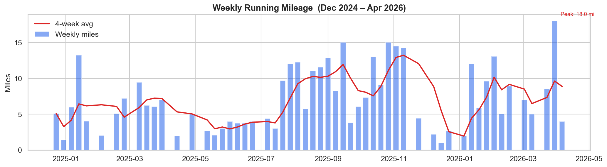
Weekly Mileage
Total miles run per week with 4-week rolling average. Red bars flag >10% week-over-week spikes — the leading predictor of overuse injury.
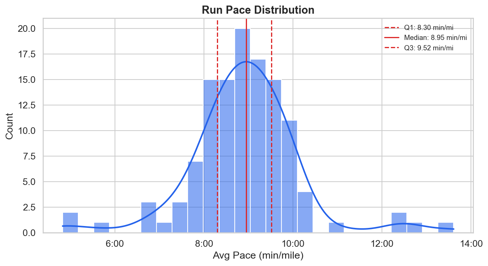
Pace Distribution
Histogram of average pace across all runs. Q1/median/Q3 marked. The spread reflects training variety from recovery jogs to race-effort runs.
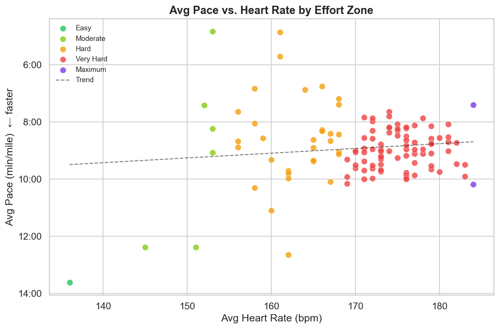
Pace vs. Heart Rate
Each dot is one run, colored by effort zone. The trend line shows the expected pace–HR tradeoff; outliers reveal unusually good or bad days.
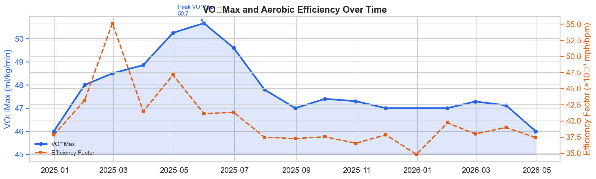
VO₂Max & Efficiency
Monthly VO₂Max estimate alongside aerobic efficiency factor (speed/HR). Both track fitness improvement independently of pace.
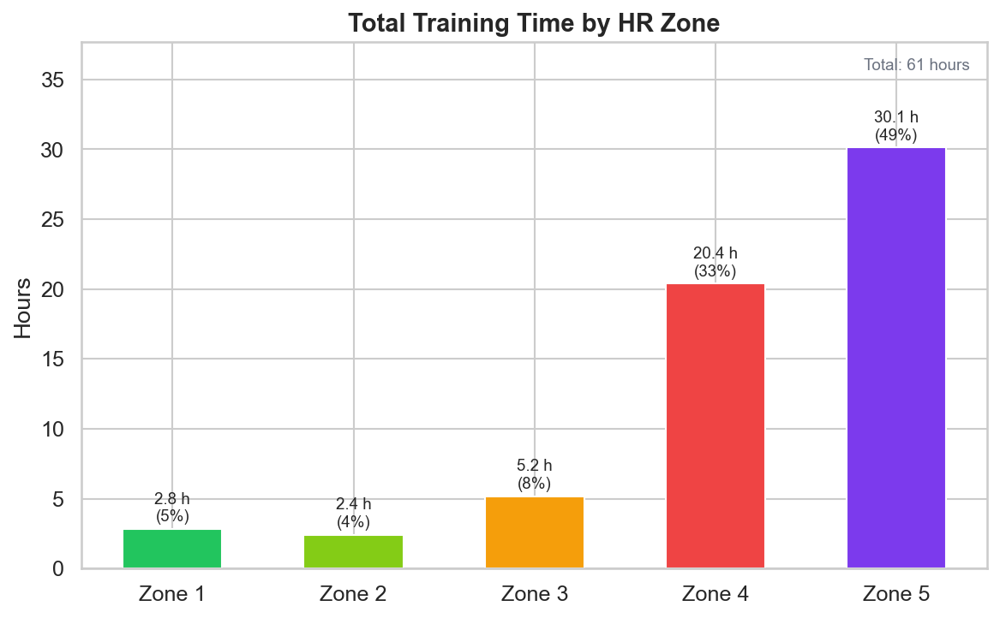
HR Zone Distribution
Total training time by heart rate zone. Zone 1–2 dominance reflects a polarized base-building approach (~80/20 training).
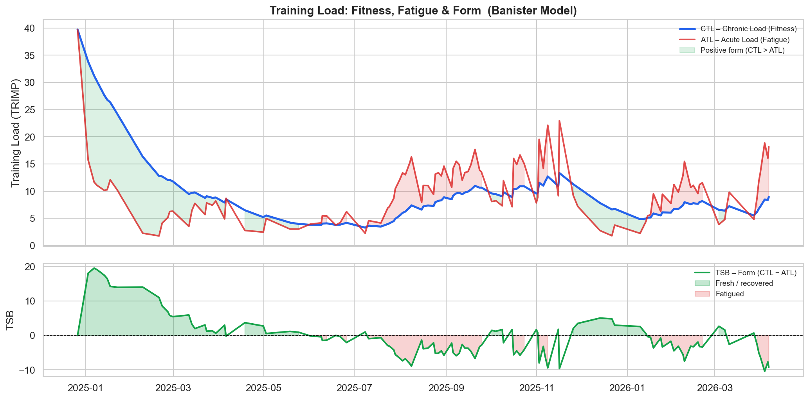
ATL / CTL / TSB
The Banister model: Chronic Training Load (fitness), Acute Training Load (fatigue), and Training Stress Balance (form). Negative TSB at injury onset confirms the overreaching diagnosis.
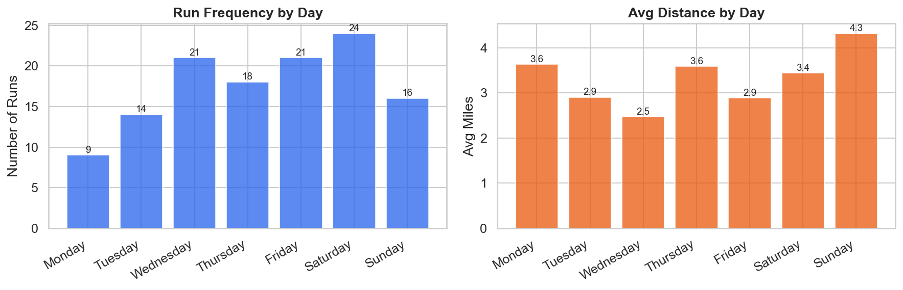
Day-of-Week Patterns
Run frequency and average distance by day of week. Saturday long runs and midweek recovery runs emerge as the dominant training structure.
Significance testing & regression
Spearman correlations, Kruskal-Wallis H-tests, Mann-Whitney U with Bonferroni correction, and OLS regression with confidence intervals.
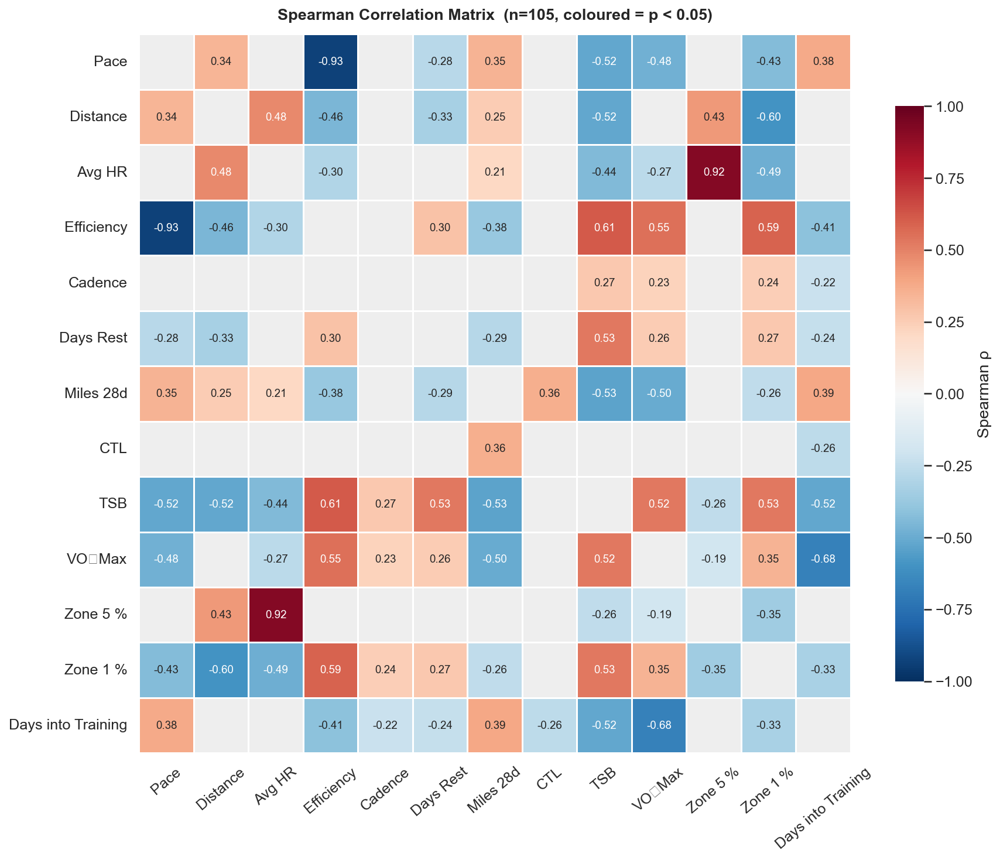
Spearman Correlation Matrix
Non-parametric correlations between all key running metrics.
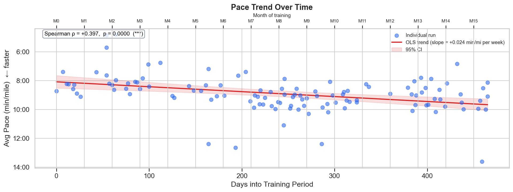
Pace Trend Over Time
OLS regression with 95% CI. Pace slowed +0.024 min/mi per week — driven by volume, not fitness decline.
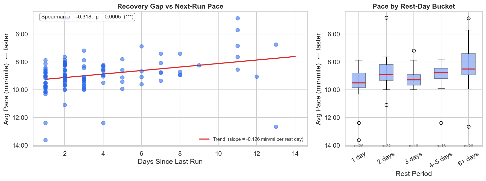
Recovery Gap vs. Pace
Mann-Whitney U: runs within 1 day of a prior run are significantly slower (p = 0.003).
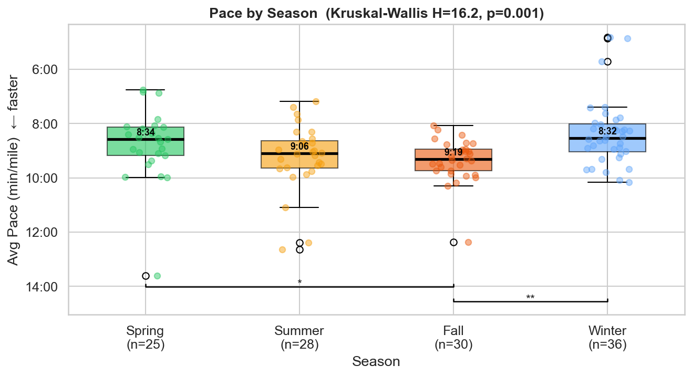
Pace by Season
Kruskal-Wallis: seasonal pace differences are statistically significant (p < 0.05).